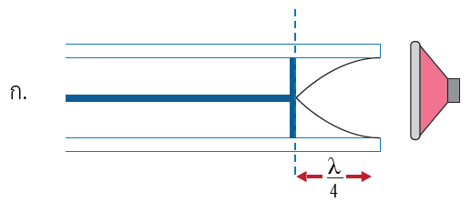
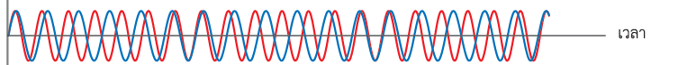
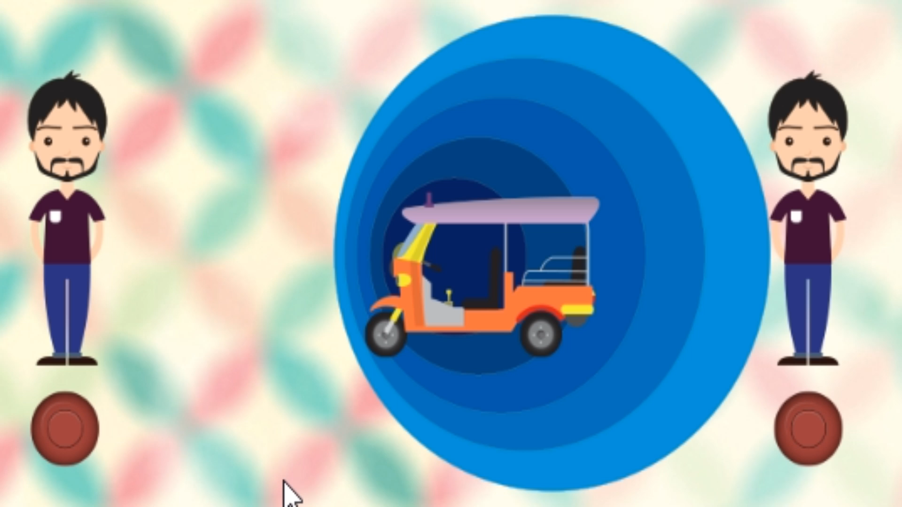
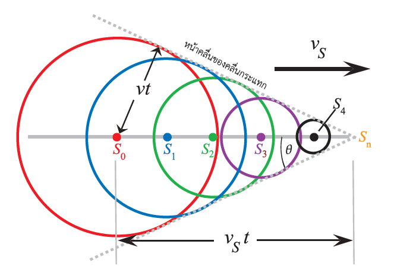

12.3.1
หัวข้อที่ 1
Physics M.5 | บทที่ 12 เสียง
บทเรียนเรื่องเสียง แบบครูพาเรียนทีละฉาก
เรียนปรากฏการณ์เกี่ยวกับเสียงแบบค่อยเป็นค่อยไป ครอบคลุมคลื่นนิ่งของเสียง การสั่นพ้องของอากาศในท่อ บีต ปรากฏการณ์ดอปเพลอร์ และคลื่นกระแทก พร้อมคำอธิบาย เสียงบรรยาย เสียงทดลอง และ simulator ประกอบ
Guided Lesson Player
เรียนทีละฉาก
ส่วนนี้ออกแบบให้เหมือนมีครูคอยพาเรียน นักเรียนอ่านคำอธิบาย ฟังเสียงบรรยาย ทดลองเสียง และตอบคำถามสั้น ๆ ก่อนเลื่อนไปฉากถัดไป
Teaching Flow
แผนการเรียน
ใช้ได้ทั้งแบบสอนหน้าชั้น 2-4 คาบ หรือให้นักเรียนเรียนรู้ด้วยตนเองก่อนทำกิจกรรมจริง
คลื่นนิ่งของเสียง
เริ่มจากทบทวนคลื่นนิ่งจากคลื่น 2 ขบวน การเกิดตำแหน่งเสียงดัง-ค่อย และความสัมพันธ์ λ/4, λ/2
การสั่นพ้องในท่อ
ต่อด้วยความถี่ธรรมชาติของลำอากาศ ท่อปลายปิดหนึ่งด้าน และสมการ fn = nv/4L
บีต
เรียนเสียงดัง-ค่อยตามเวลา เมื่อเสียง 2 แหล่งมีความถี่ต่างกันเล็กน้อย และ fb = |f1-f2|
ดอปเพลอร์และคลื่นกระแทก
ปิดท้ายด้วยความถี่ที่ผู้ฟังได้ยินเมื่อมีการเคลื่อนที่สัมพัทธ์ และคลื่นกระแทกเมื่อแหล่งกำเนิดเร็วกว่าเสียง
Lesson Notes
เนื้อหาอ่านทบทวน
อ่านต่อเนื่องแบบเอกสาร ครอบคลุมจุดประสงค์ กิจกรรมทดลอง อภิปรายผล สูตร ตัวอย่างคำนวณ และคำถามตรวจสอบความเข้าใจ พร้อมสื่อประกอบในจุดสำคัญ
Learning Objectives
จุดประสงค์การเรียนรู้
ด้านความรู้
- อธิบายการเกิดคลื่นนิ่งของเสียงจากการซ้อนทับของเสียงตกกระทบและเสียงสะท้อน
- อธิบายและคำนวณการสั่นพ้องของอากาศในท่อปลายปิดหนึ่งด้าน
- อธิบายบีตและคำนวณความถี่บีตจากผลต่างของความถี่เสียงสองแหล่ง
- อธิบายปรากฏการณ์ดอปเพลอร์ของเสียงและคลื่นกระแทกจากการเคลื่อนที่ของแหล่งกำเนิด
ด้านทักษะ
- อ่านผลจากกราฟคลื่น ตำแหน่งบัพ ปฏิบัพ และความยาวคลื่น
- ใช้ข้อมูลอุณหภูมิเพื่อหาอัตราเร็วเสียง v = 331 + 0.6TC
- ออกแบบการทดลองด้วยแหล่งกำเนิดเสียง แอปวัดระดับเสียง และหลอดเรโซแนนซ์
- เชื่อมโยงปรากฏการณ์เสียงกับสถานการณ์จริง เช่น เครื่องดนตรี รถพยาบาล และซอนิกบูม
Interactive Lab
ชุดทดลองเสมือน
ทุก simulator คำนวณใหม่ทันทีเมื่อเปลี่ยนค่า และวาดภาพด้วย canvas เพื่อใช้ประกอบการอธิบายหน้าชั้น
12.3.1
คลื่นนิ่งของเสียง
คลื่นนิ่งเกิดจากคลื่นเสียง 2 ขบวนที่มีแอมพลิจูด ความถี่ และความยาวคลื่นเท่ากัน เคลื่อนที่สวนทางกันแล้วซ้อนทับกัน ในกิจกรรมนี้ เสียงจากลำโพงสะท้อนจากพื้นหรือผนังแข็ง แล้วรวมกับเสียงเดิมจนเกิดตำแหน่งเสียงดังและเสียงค่อยสลับกัน
v = fλ
ดัง-ค่อยถัดกัน = λ/4
ดัง-ดังถัดกัน = λ/2
แนวอภิปรายสำหรับครู
ตำแหน่งเสียงดังที่สุดคือปฏิบัพความดันและบัพการกระจัด ส่วนตำแหน่งเสียงค่อยที่สุดคือบัพความดันและปฏิบัพการกระจัด ที่พื้นหรือกำแพงแข็งมักเป็นปฏิบัพความดัน เพราะอากาศใกล้ผิวแข็งถูกอัด-ขยายเด่น แต่การกระจัดของโมเลกุลเป็นศูนย์
Simulator 1: คลื่นนิ่งระหว่างลำโพงกับพื้นแข็ง
กำลังคำนวณ...
12.3.2
การสั่นพ้องของอากาศในท่อปลายปิดหนึ่งด้าน
เมื่อลำอากาศในท่อถูกกระตุ้นด้วยเสียงที่มีความถี่เท่ากับความถี่ธรรมชาติ ลำอากาศจะสั่นพ้องและได้ยินเสียงดังมาก สำหรับท่อปลายปิดหนึ่งด้าน ปากท่อเป็นปฏิบัพการกระจัด ส่วนปลายปิดเป็นบัพการกระจัด
v = 331 + 0.6TC
L = nλ/4
fn = nv/4L, n = 1, 3, 5, ...

โจทย์ตัวอย่าง
ถ้าตำแหน่งลูกสูบขณะเกิดเสียงดังที่สุดสองครั้งถัดกันห่างกัน 0.400 m ระยะนี้เท่ากับ λ/2 ดังนั้น λ = 0.800 m และถ้า v = 346 m/s จะได้ f = v/λ = 433 Hz
Simulator 2: หลอดเรโซแนนซ์
กำลังคำนวณ...
12.3.3
บีต
เมื่อเสียงจากแหล่งกำเนิด 2 แหล่งมีความถี่ต่างกันเล็กน้อยมาพบกัน การซ้อนทับทำให้ได้ยินเสียงดัง-ค่อยเป็นจังหวะตามเวลา จำนวนครั้งของเสียงดัง-ค่อยต่อวินาทีคือความถี่บีต
fb = |f1 - f2|
หูแยกบีตได้ดีเมื่อ fb ≤ 7 Hz

แยกบีตกับแทรกสอดอย่างไร
บีตทำให้เสียงดัง-ค่อยเปลี่ยนตามเวลา ณ ตำแหน่งฟังเดียวกัน ส่วนการแทรกสอดของเสียงจากแหล่งกำเนิดอาพันธ์ทำให้เสียงดัง-ค่อยเปลี่ยนตามตำแหน่งผู้ฟัง
Simulator 3: Beat Lab
กำลังคำนวณ...
12.3.4
ปรากฏการณ์ดอปเพลอร์ของเสียง
เมื่อแหล่งกำเนิดเสียงและผู้ฟังมีการเคลื่อนที่สัมพัทธ์กัน ผู้ฟังจะได้ยินความถี่ต่างจากความถี่ที่แหล่งกำเนิดผลิต ถ้าแหล่งกำเนิดเคลื่อนที่เข้าหาผู้ฟัง หน้าคลื่นถูกอัดให้สั้นลงและได้ยินเสียงสูงขึ้น ถ้าเคลื่อนที่ออก หน้าคลื่นยาวขึ้นและได้ยินเสียงต่ำลง
เข้าหากัน: ความถี่สูงขึ้น
ห่างกัน: ความถี่ต่ำลง
ลมคงตัวอย่างเดียวไม่ทำให้เกิดดอปเพลอร์

สถานการณ์รถพยาบาล
ก่อนรถผ่านเด็ก แหล่งกำเนิดเคลื่อนที่เข้าหา เด็กได้ยินความถี่สูงขึ้น ขณะผ่านประมาณว่าอยู่คนละแนวกับการเคลื่อนที่ของเสียงจึงใกล้ความถี่เดิม หลังผ่านไป แหล่งกำเนิดเคลื่อนที่ออก เด็กได้ยินความถี่ต่ำลง
Simulator 4: Doppler Field
กำลังคำนวณ...
Supersonic
คลื่นกระแทกและซอนิกบูม
ถ้าแหล่งกำเนิดเสียงเคลื่อนที่เร็วกว่าอัตราเร็วเสียงในตัวกลาง หน้าคลื่นหลายหน้าจะซ้อนสะสมเป็นแนวกรวยคลื่นกระแทก พลังงานจำนวนมากจึงรวมอยู่บนหน้าคลื่น และผู้ฟังตามแนวนี้จะได้ยินเสียงดังมาก เรียกว่า ซอนิกบูม
M = vs/v
sin θ = 1/M
ยิ่ง M มาก มุมมัคยิ่งเล็ก

Simulator 5: Mach Cone
กำลังคำนวณ...
Assessment
แบบตรวจสอบความเข้าใจ
1. คลื่นนิ่ง: ดัง-ค่อยห่างกัน 10.00 cm หา f เมื่อ v = 350 m/s
ระยะดัง-ค่อยถัดกัน = λ/4 = 0.1000 m ดังนั้น λ = 0.4000 m และ f = v/λ = 350/0.4000 = 875 Hz
2. สั่นพ้อง: ตำแหน่งเรโซแนนซ์ถัดกันห่าง 0.400 m หา f เมื่อ v = 346 m/s
ตำแหน่งเรโซแนนซ์ถัดกันห่าง λ/2 ดังนั้น λ = 0.800 m และ f = 346/0.800 = 433 Hz
3. บีต: 392 Hz กับเสียงอีกตัวเกิดบีต 3 Hz เสียงอีกตัวเป็นเท่าใด
fb = |392 - f2| = 3 ดังนั้น f2 = 389 Hz หรือ 395 Hz
4. ดอปเพลอร์: รถพยาบาลวิ่งเข้าหา ผ่าน แล้ววิ่งออก ผู้ฟังได้ยินอย่างไร
ก่อนผ่านได้ยินสูงขึ้น ขณะผ่านใกล้ความถี่เดิม หลังผ่านได้ยินต่ำลง